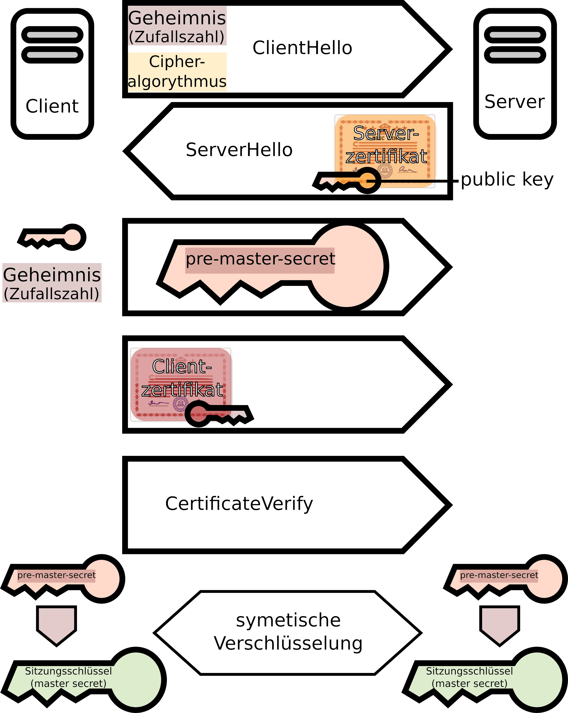

IT-Technik - Netzwerkgrundlagen
HTTP dient zum Abruf von Webseiten. Das Protokoll arbeitet auf dem Presentation Layer (7). Es ist ein zustandsloses Protokoll, d. h. es gibt zunächst keine Möglichkeit Daten zu speichern. Dies kann durch Cookies umgangen werden, die im HTML-Header übertragen und vom Client gespeichert werden.
Die HTTP-Versionen 1 und 2 übertragen alle Information unverschlüsselt, sodass sie auf jedem Router, den sie passieren mitgelesen werden können.
Zur Verschlüsselung kann aber TLS verwendet werden.
Dabei identifizieren sich Server und Client zunächst im TLS Handshake mit Hilfe von Zertifikaten. Zugleich werden Crypto-Schlüssel ausgetauscht.
Dann werden im TSL Record sämtliche übertragenen Daten mit diesen Schlüsseln verschlüsselt.
So wird verhindert, dass Daten beim Transport mitgelesen (Vertraulichkeit) oder manipuliert (Integrität).
Server Zertifikate werden von einer Certificate Authority (CA) ausgegeben und signiert. Jeder Browser führt eine Liste vertrauenswürdiger CAs.
Das Zertifikat enthält Informationen über die Organisation für die es ausgestellt wurde. Außerdem den öffentlichen Schlüssel der für die Verschlüsselung verwendet werden soll und eine Signatur, die die Echtheit des Zertifikats bestätigt.
Das Clientzertifikat wird vom Browser zur Verfügung gestellt.

Abbildung 1: TLS Handshake